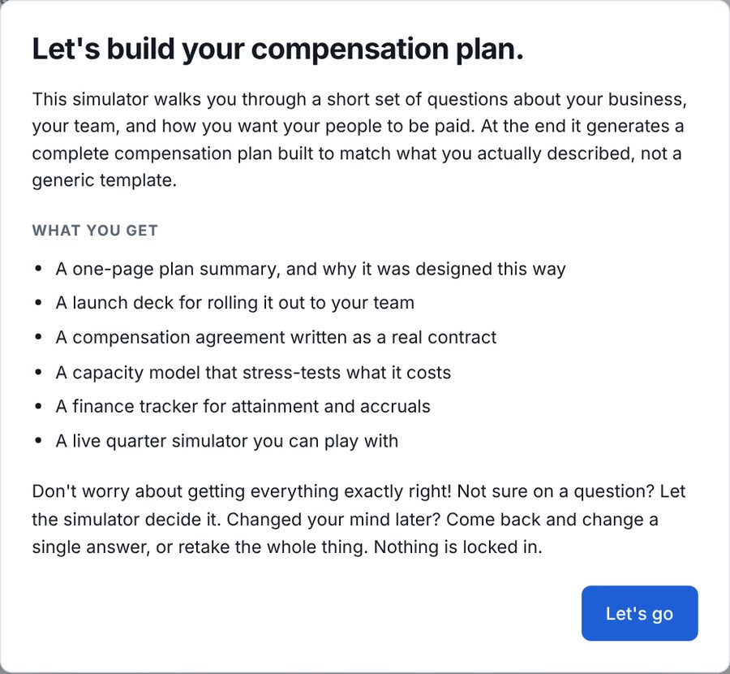
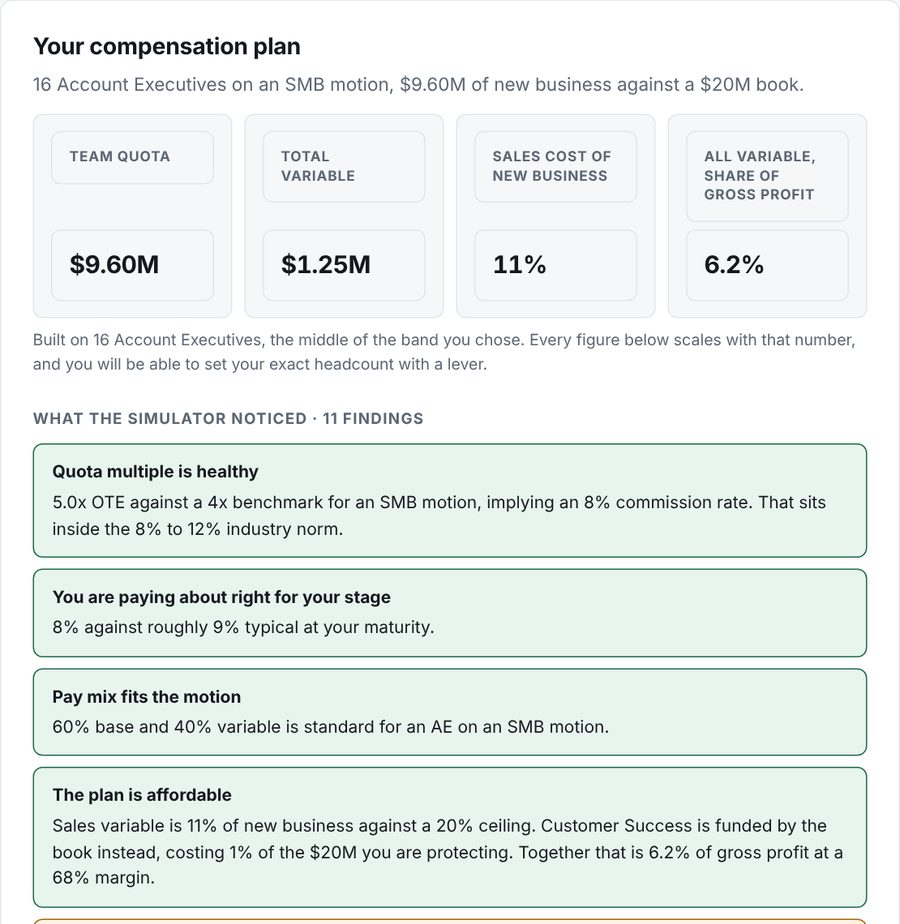
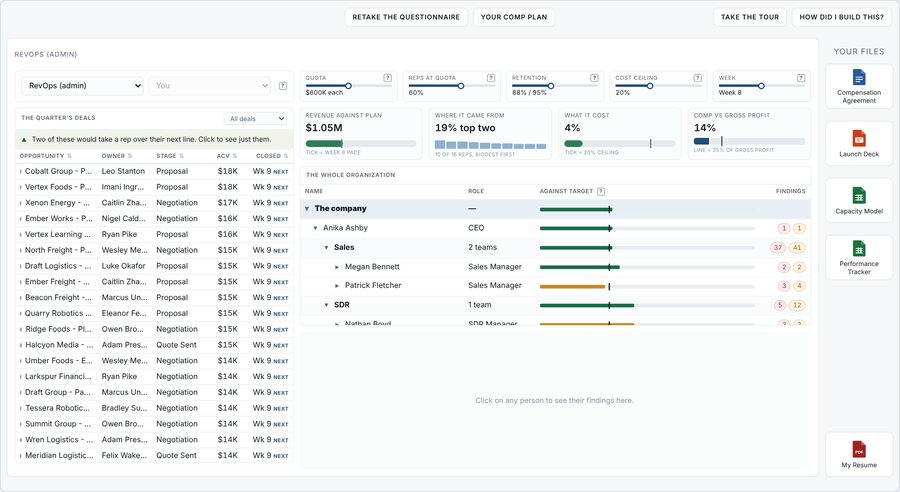

Quota?
$150K each
Reps at quota?
60%
Retention?
88% / 95%
Cost ceiling?
20%
Week?
Week 6
Javier J. Hernandez
This is a console built for a wide screen, so it does not open on a phone. Below is what it looks like and what it does. Open it on a laptop to use it.



Every company that sells something runs a compensation plan, and very few of them can tell you why theirs is built the way it is.
A comp plan has to follow three rules. Motivation, a line a rep can see between the work they do today and the money that turns up later. Simplicity, which means anybody paid by it can work out their own cheque without help. Company goals, which means it pays for the thing the company says it actually wants. Most comp plans break at least one of them, and usually nobody finds out until the quarter is over.
So I built something that cannot produce a comp plan without also producing the argument for it. There is a conversation happening in revenue operations about two jobs pulling apart, the person who knows what the business needs and the person who can build the system that serves it. Building a comp plan is where that gap shows up most clearly, which is exactly why I picked it.
Open it on a laptop, take the questionnaire and watch the simulator build your own comp plan.
RevOps (admin)
Every SaaS company runs a compensation plan, and very few know why theirs is built the way it is. It lives in a spreadsheet somebody inherited or inside a platform that costs more than the team it pays, and either way, ask why the accelerator starts where it starts and you get a shrug.
A comp plan has to follow three rules. Motivation, a line a rep can see between their work and the money they receive later. Simplicity, which means anybody paid by it can work out their own cheque without help. Company goals, which means it pays for the thing the company says it actually wants. Most comp plans break at least one of them, some break all three, and usually nobody finds out until the quarter is over.
So I built something that cannot produce a comp plan without also producing the argument for it, and then runs a quarter against it so you can see who it pays and who it punishes before it becomes somebody’s income. The thinking went into a knowledge base I built with Claude, assembled from the research up and argued out before a line of it was coded. Claude Code built the application from it. n8n produces the documents.
There is also a conversation happening in revenue operations about two jobs pulling apart, the person who knows what the business needs and the person who can build the system that serves it. Building a comp plan is where that gap shows up most clearly, which is exactly why I picked this project.
I have spent seven years in revenue operations and twelve across the go-to-market lifecycle. The pattern repeats: a comp plan gets built to fix last year’s problem, ships without being stress-tested, and the damage turns up two quarters later in attrition or in margin.
What was missing was something that would take what you asked for, build it, and then show you where what you asked for doesn’t match what you need.
RevOps is changing, and not slowly. It used to have two roles: the CRM admin who built the systems, and the manager who decided what the business needed. That worked while the building was plumbing. Now, GTM Engineers are a real role and they are everywhere, and what gets built has moved a long way past plumbing. So the job is becoming one person instead of two, and that makes which side you start from matter. Building can be learned. The judgement is harder to pick up on the way.
A comp plan is the clearest test of that. It is the hardest thing in revenue operations to fake: the manager designed it, somebody else wired it up. Getting it right means knowing how pay changes behaviour, what a sales cycle does to a quota, and where a plan quietly stops matching what the company says it wants. I came from the design half. Here I did both. Take it for a spin.
First I read, then I wrote. Eleven sources on how SaaS companies actually pay: what a starting commission rate looks like, how big a quota should be next to the pay it earns, when a draw is a kindness and when it is a trap, where an accelerator should start. That reading is the floor under every default in here.
All of it went into a knowledge base before any of it was built, and that was the point. I wanted Claude working from material I had read and vetted, so that what came out came from there and not from whatever it half-remembered. A model with nothing in front of it fills the gap confidently and wrongly.
It is also where the three comp plan rules (Motivation, Simplicity, Company goals) stopped being a slogan. Every rule had to produce a verdict: green when the plan holds to it, red when it does not. That is 52 verdicts on the plan you design and 164 on the quarter it runs, each with the exact condition that fires it. A rule the tool could not decide did not belong in the tool.
No code until the decision was written down and somebody could argue with it. Two things came out of that. Somebody who has never seen the code could rebuild this from the documentation. And when I changed my mind, I could see straight away what else had to change with it, instead of finding out later.
Twenty answers go in. What comes out is a plan for every role on the team, the quota and the rate behind each one, what the whole thing costs as a share of revenue, and then a full quarter running against it, with every person earning or missing their number week by week.
The first half is a plan, and a plan can be read. The second half is what a plan does, and that can only be watched. On paper you can tell whether it is coherent: the rate funds itself, the mix adds up, the cost lands inside the guardrail. You cannot tell who it punishes. A quota that needs nine deals in a nine-week cycle reads fine in a spreadsheet and stops being arguable the moment you watch most of the team finish at 60%.
So the plan is judged twice. Once as a design, and once as money landing on specific people. The two catch different things, and the second one is the one nobody does before launch.
None of that depends on the data being invented. What the engine works from is deal size, cycle length, win rate, quota and attainment, which is what sits in any CRM. Nothing here is tied to a simulated quarter. A simulated quarter is just the only one I have.
A comp plan is not finished when the numbers work. It is finished when it is something you can sign, present and model.
Five documents come out of this plan. The one-pager is the plan and the argument for it on a page, the thing you send before the meeting. The launch deck is the roll-out, built to present to the people the plan pays. The compensation agreement is the signable version, with the targets, rates and clawback terms written in. The capacity model is the plan as a finance workbook with live formulas, so it can go further than the simulator does: your own discount bands, commission tied to gross margin, the payout run against next year’s headcount. The finance tracker is the quarter as a spreadsheet, because plenty of finance teams still accrue commission in a sheet and would rather have their own.
The deck explains the plan, it does not judge it. You do not tell a sales team their quota does not fit their cycle, so no findings are in it. A manager’s pay is not in it either: that belongs in their agreement, not on a slide shown to their own team.
The plan documents ignore the what-if controls. The analysis files follow them. Move a lever and the capacity model and the tracker move with it. The one-pager, the deck and the agreement stay on the plan as it was designed, because a signed agreement should not change its terms when somebody drags a slider.
Three environments, and the split is deliberate. The specification was built with Claude in the desktop app, and it is not a document describing an engine. It is an engine: the plan logic, the five document generators, and twenty-eight checkers that re-derive every printed number from its inputs across tens of thousands of randomly generated plans. All of it runnable, which is what makes everything after it short.
Claude Code built the shipped application from that, and none of the comp logic was its to decide. The rules and the copy sit in a data file it reads, and the conditions behind the findings went over as tested code, so the build was an interface over decisions that were already settled, rather than someone deciding what a decelerator should do while also writing the screen that displays it.
n8n produces the documents. Self-hosted rather than parked on a free tier, so it still answers on a Tuesday night when nobody is watching. Webhook in, finished document out, and every document it returns is checked against what the generators produce directly, thirty-six of them across nine plans, because a service that returns something is not the same as a service that returns the right thing. The compensation agreement is built from a Word template, so changing a sentence in it is a template edit and not a code change, and it does not have to be me who makes it.
Prototype in one place, ship from another, with something executable in between. The middle piece is the part most AI builds skip, and it is the reason the last stage was the short one.
The commission rate is not something you get to choose. At target, variable pay has to equal quota times the rate, so the rate is just variable divided by quota and this tool never asks you for one. That sounds like a shortcut until you give it a $200K OTE against a $350K quota, and it tells you the implied rate is 28.6% and the plan cannot fund itself. Most tools take both numbers happily and never notice they disagree.
Pay a different rate per product and you have bought a cost you cannot predict. Paying 1.25 on the strategic product and 0.75 on services points reps at what the company wants sold, and it works, which is the problem: spend now moves with a mix nobody controls, and the better it works the more it costs. The fix is to quota the mix or bound the premium. Almost nobody does either, and Finance finds out when commission comes in over plan.
A dashboard cannot show you most of what is wrong with a comp plan. If nobody is paid to grow an existing account, a quarter could still look flawless. Team at 105%, cost inside the guardrail, everything green. The damage lands in net revenue retention two years later, and nothing in this quarter will ever surface it. Which is why that warning lives on the plan and not on the quarter, two years before your retention number says it.
If any of this is worth a conversation, download my resume or find me on LinkedIn.